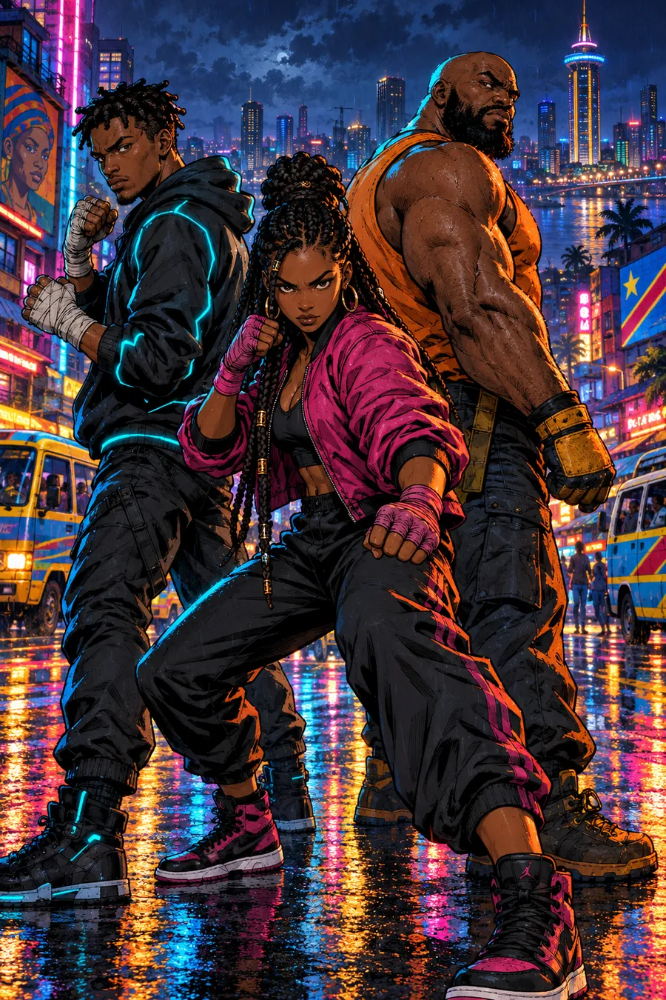

Jouez avec un casque et une manette pour la meilleure expérience · Portrait ou paysage

GHOSTLINK
LES 24 COMMUNESCHOISIS TON COMBATTANT
LES 24 COMMUNES
REGISTRE DES EXPLOITS
V26.8Les records se sauvegardent après une victoire. Les résultats des anciennes versions sont préservés.
RÉGLAGES
LB / RB : changer d'onglet · B : fermer
Commandes et techniques
- COUP enchaîne les combos · maintenir = combo automatique · en l'air : attaque sautée · sur une arme : la ramasser.
- DASH éclair invulnérable (au sol et en l'air), annule un coup qui touche · dash + COUP = attaque en course. DOS + direction fait aussi un dash.
- PARADE (façon Ori 2) : DOS ou DASH juste avant d'être touché → l'ennemi est sonné, les projectiles sont renvoyés.
- ESQUIVE PARFAITE : traverser une attaque pendant un dash → ralenti, le coup suivant fait +50 % (CONTRE).
- DOS seul : attaque arrière (demi-tour + frappe). Un coup qui touche peut s'annuler en attaque arrière.
- SAUT en l'air = double saut en salto · SAUT pendant une chute = rétablissement.
- Saut variable (manette et clavier) : relâchez SAUT tôt pour un petit saut.
- Physique : les ennemis lourds reculent moins ; un ennemi projeté contre le bord de l'écran rebondit (MUR !) ; un gros coup l'envoie dans ses alliés (DOMINO !) ; sur sol mouillé, on glisse plus loin.
- SPÉCIAL coûte un peu de vie (partie verte), récupérée en frappant. Avec une direction : spécial avant. En l'air : spécial aérien. Sert aussi à se dégager.
- Double-tap avant = course · course + COUP = attaque en course · course + SPÉCIAL = BLITZ.
- RAMASSER une arme : E/V (J1), Pavé 0/N (J2), View/Share sur manette, bouton contextuel sur téléphone. COUP n'est jamais consommé par le ramassage.
- Avec une arme : COUP frappe, SPÉCIAL la lance.
- Marchez contre un ennemi pour le saisir : COUP = genou, COUP + arrière ou DOS = projection, SAUT = passer de l'autre côté.
- Saisi par un molosse ? Martelez les boutons ou utilisez SPÉCIAL pour vous libérer.
- Points de combo : encaissés à la fin du combo, perdus si vous êtes touché avant. Une vie bonus tous les 50 000 points.
- ★ coup étoile : frappe tout l'écran. Ramassez des étoiles pour recharger.
Clavier J1 : Q/A·D·Z/W·S déplacer, F/J coup, Espace/K saut, H/L spécial, R/U dos, Maj/O dash, T/I étoile, Échap pause. J2 : flèches, Pavé 1-6 ou , . / M ' ; · Ramasser J1 : E/V · J2 : Pavé 0/N
Manette recommandée. Le jeu est pensé pour la précision d'une manette : parades, dash et combos au millimètre.
Les menus se pilotent entièrement à la manette : croix ou stick pour se déplacer, A / Croix pour valider, B / Rond pour revenir.
Jouez au casque. Le mode Casque 3D place chaque coup, chaque ennemi et chaque projectile autour de vous (son binaural).
Dolby Atmos n'est pas disponible dans un navigateur ni dans une application web. Le mode Casque 3D utilise le rendu binaural HRTF de Web Audio, qui donne une sensation de son en 3D avec n'importe quel casque.
La vitesse réduite et la fenêtre de parade large (onglet Jeu) rendent les combats plus accessibles sans changer la difficulté.
CRÉDITS
KINSHASA 243 : GHOSTLINK — Val Industries Corporate Technologies · V26.8 Enemy Tactics (base V12.4, Traversée V24, combat V21). Beat'em up mobile original : 24 niveaux dans les 24 communes de Kinshasa, personnages, histoire, musique et illustrations créés pour ce projet, en hommage aux grands jeux de bagarre de rue. Les « récits du Congo » s'appuient sur des faits historiques et culturels publics.
Registre des contributeurs IA
- ChatGPT / GPT — versions fondatrices
- GPT-6 (déclaré) — V6, protocole des contributeurs
- Gemini — itérations V6 à V9
- Perplexity Computer — V4 Network, V9.1, V9.2 Visual, V10 Mobile, V11 Furie dans les rues, V12 à V12.4 (animations et physique)
- OpenAI GPT-6 (ChatGPT) — V26 Reconstruction bêta : fusion V12.4/V24, mécanismes de convoi, sauvegardes, audit et tests statiques · 13 octobre 2026
- OpenAI GPT-6 (ChatGPT) — V26.1 : restauration du coup chargé et du finisher 8+, tests de non-régression et documentation · 13 octobre 2026
- OpenAI GPT-6 (ChatGPT) — V26.2 : records par niveau, médailles, migration additive des sauvegardes et registre des exploits · 13 octobre 2026
- OpenAI GPT-6 (ChatGPT) — V26.3 : phases de Joe-Vally Déchu et balises de libération · 13 octobre 2026
- OpenAI GPT-6 (ChatGPT) — V26.4 : barrages Kenge, garage Carly et motards alliés · 13 octobre 2026
- OpenAI GPT-6 (ChatGPT) — V26.5 : course à l'inversion, interaction RAMASSER distincte de COUP, optimisation des jetons IA, diagnostic des ressources locales et tests · 13 octobre 2026 (brief de revue : Claude / Anthropic)
- OpenAI GPT-6 (ChatGPT) — V26.6 : anticipation de saut à l'atterrissage, entrées conservées durant le hitstop, fenêtres de frappe robustes, hitbox colosse en profondeur et allocations réduites · 13 octobre 2026 (méthode de revue : Claude / Anthropic ; tests de simulation, validation PC/Android encore requise)
- OpenAI GPT-6 (ChatGPT) — V26.7 : combos confirmés propres aux trois héros, fenêtres de récupération, reactions aux dégâts, anticipation de Makasi, tests et documentation · 13 octobre 2026 (brief d’audit proposé par Claude / Anthropic ; rendu et périphériques physiques à valider)
- OpenAI GPT-6 (ChatGPT) — V26.8 : huit profils tactiques d’ennemis, jetons d’attaque temporaires, libération après interruption, drones limités, esquive de boxeuse avec délai, décision sans tableaux temporaires ; tests Node, comportement réel et FPS à valider · 13 octobre 2026 (méthode de revue inspirée du brief Claude / Anthropic)
Protocole : aucune contribution précédente n'est effacée. Chaque modification majeure est signée et datée dans JOURNAL_CONTRIBUTEURS_IA.md.
Polices Anton et Barlow Condensed (SIL Open Font License). Musique « électro-rumba » et bruitages synthétisés en temps réel.
PAUSE
RELAIS COUPÉ
K.O.
Continuer ?
LES 24 COMMUNES SONT LIBRES
Merci d'avoir joué. Développé par JOE-VALLY.